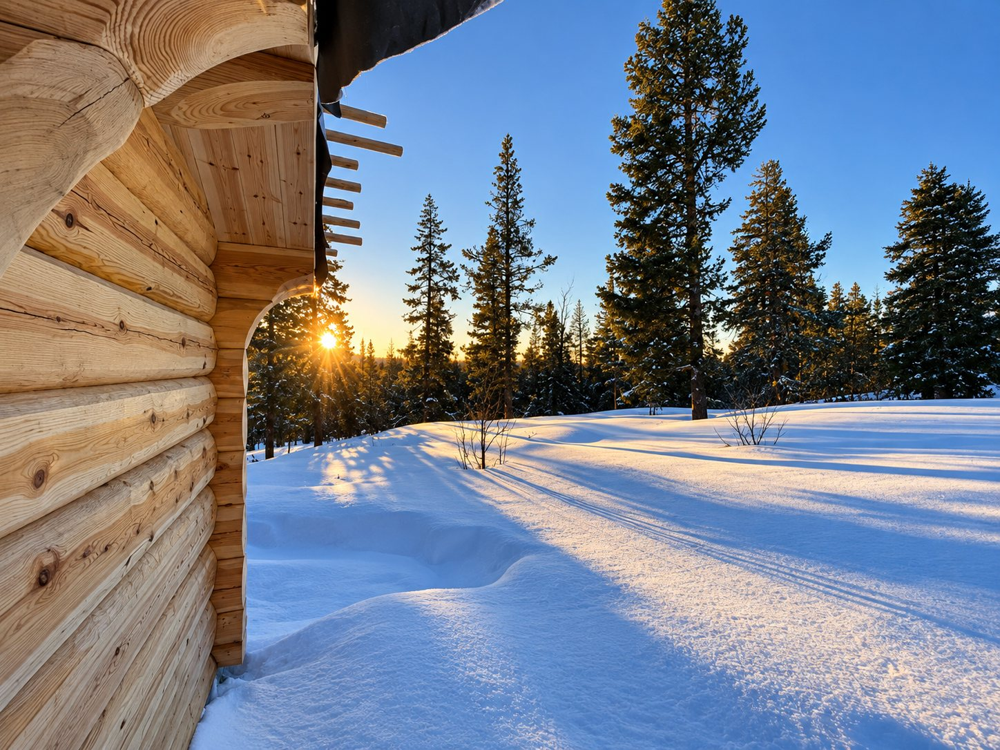
Alfavinkel Tømrer i Kvam, Nord-Fron
Jonathan Schloen tar snekring, laft, skifertak og mur i Kvam og resten av Gudbrandsdalen. Befaringen er gratis.
Utdannet i Tyskland,
lært av mestere i fire fag
Jeg tok tømrer- og snekkerutdanningen i Tyskland og var ferdig i 2016. Etterpå reiste jeg som Geselle. Det er den tyske ordningen der ferske svenner drar ut og jobber hos mestere i andre fag.
Jeg var innom møbelsnekker, taktekker, murer og smed. Derfor kan jeg legge skiferen på taket og bygge kjøkkenet under det. Tre er det jeg kan best. Gammelt håndverk er det jeg liker best.
Det meste i tre og stein
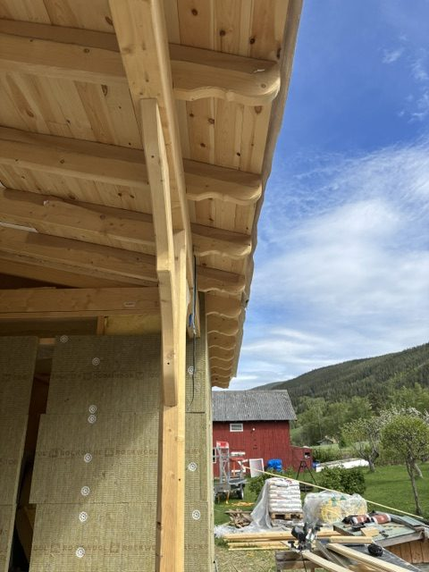
Snekring
Kledning, panel, takutstikk og svalganger, ute og inne.
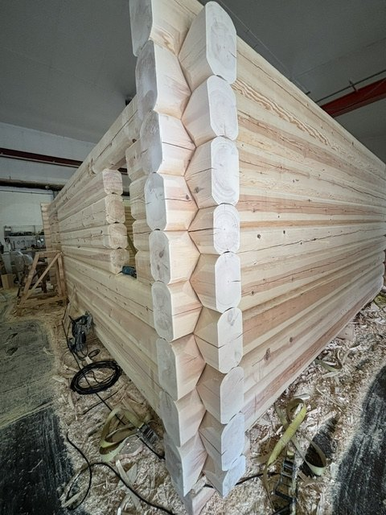
Lafting
Nye tømmerbygg, og utskifting av råtne stokker i gamle tømmervegger.
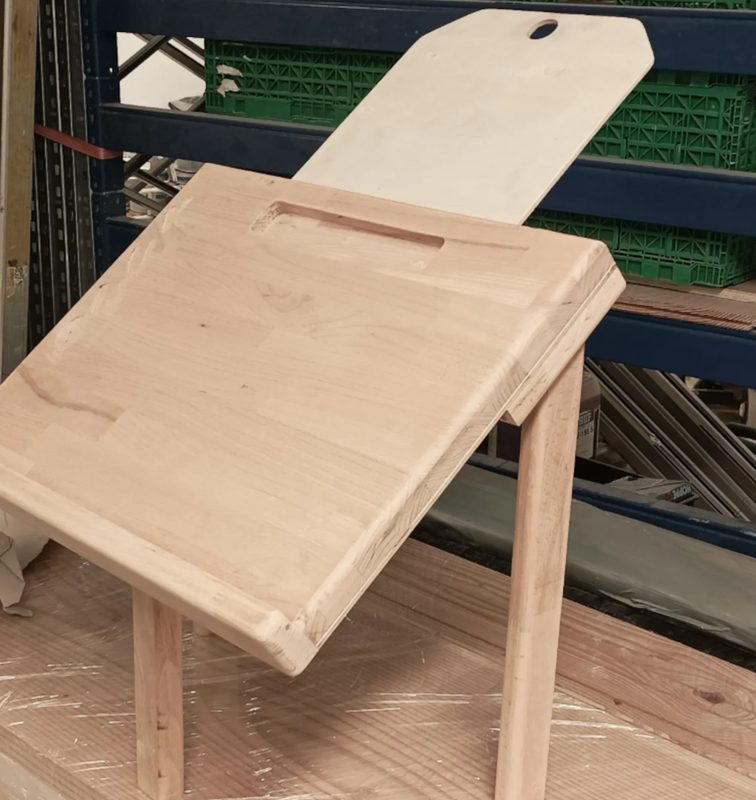
Møbelsnekring
Bord, benker, hyller og skap i heltre, laget på mål.
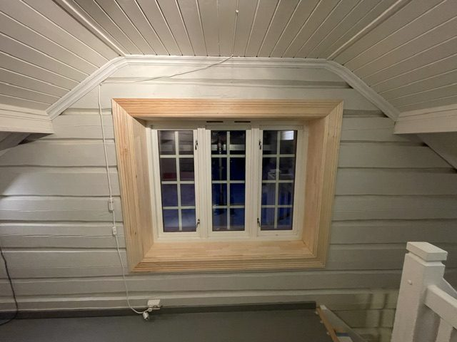
Restaurering
Eldre hus og hytter settes i stand med vinduer, foringer og kledning som passer stilen.
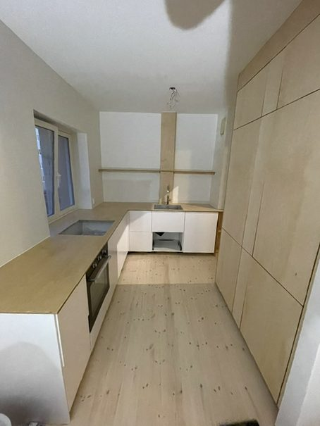
Kjøkken
Montering av ferdige moduler, eller innredning snekret på mål til rommet.
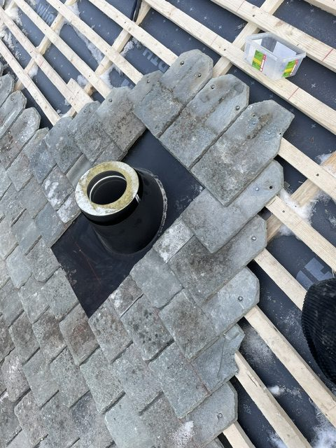
Mur og skifer
Takstein og naturstein: nye tak og plattinger.
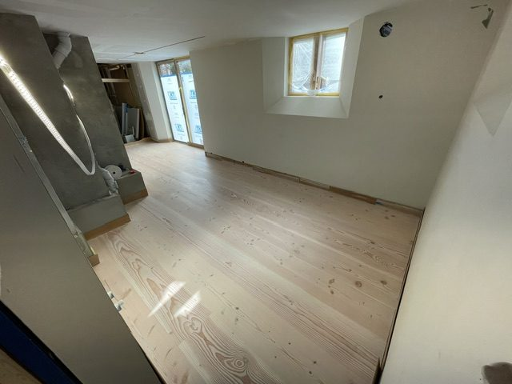
Gulv og trapp
Legging av heltre og parkett, og nye trinn og håndløpere.
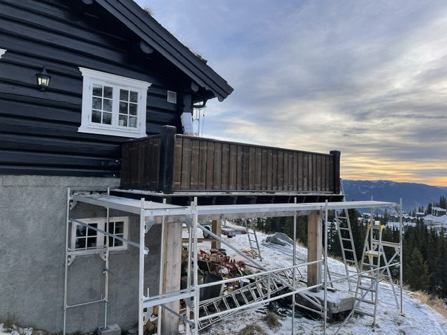
Rekkverk
Til terrasse, altan, trapp og svalgang, i tre.
Og mye mer. Spør gjerne.
Fra jobber vi har gjort
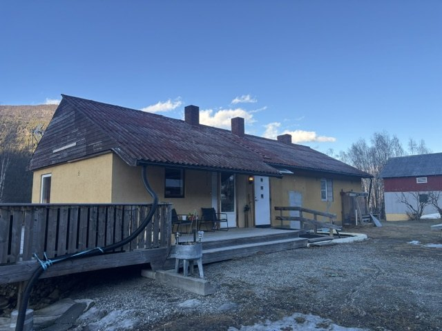
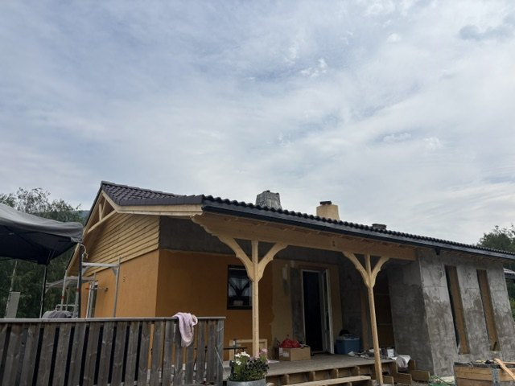
Huset på Baksidevegen i Kvam, før og etter. Vi skiftet taket, kledte gavlveggen på nytt og bygde nytt tilbygg med eget terrassetak. Innvendig tok vi snekring, flislegging og montering av vinduer og dører, og pipene fikk ny kledning i skifer. Vi startet i mai 2026 og var ferdig tre måneder senere, med litt pynt på toppen helt til slutt.
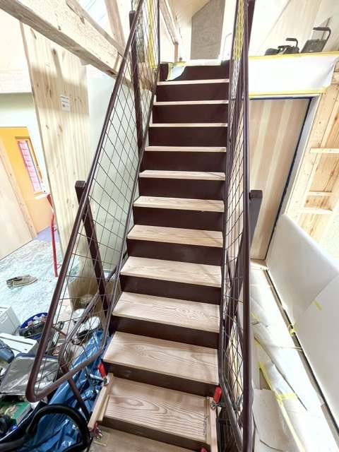
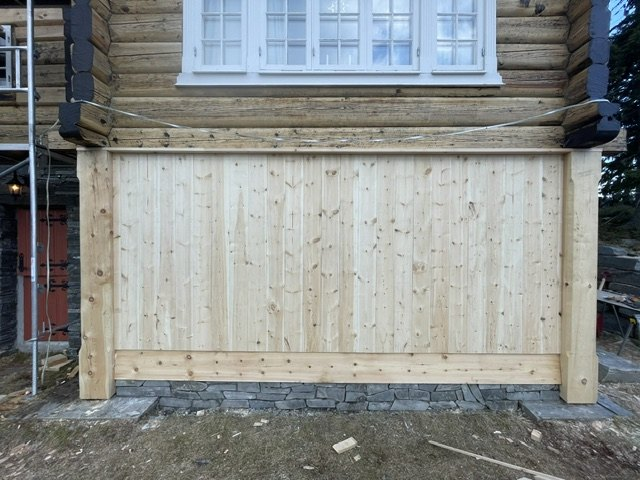
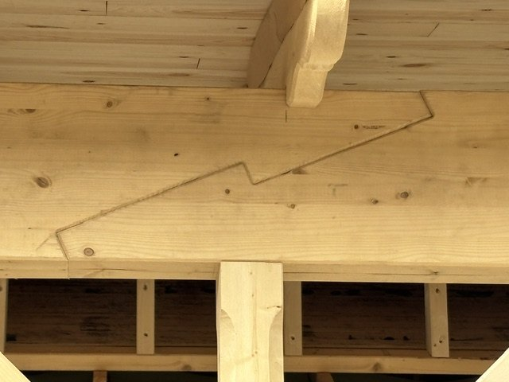
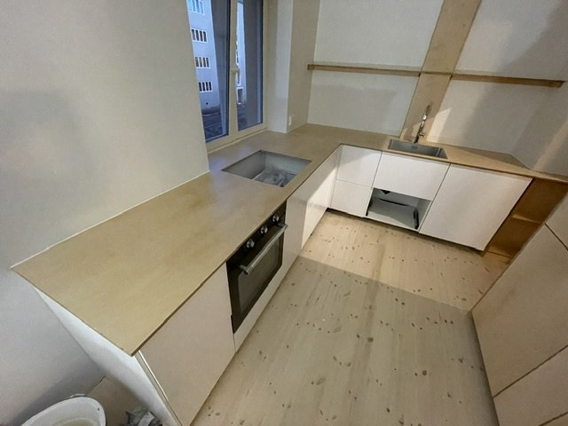
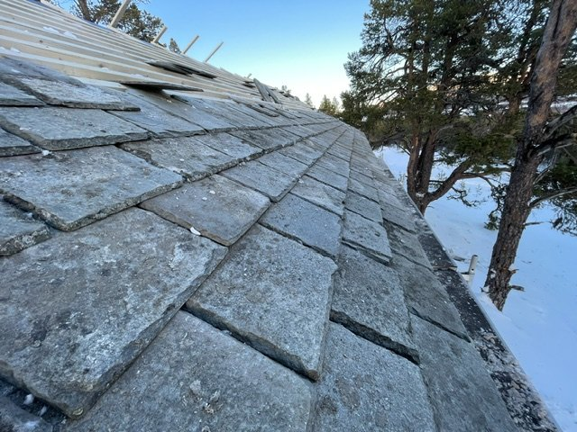
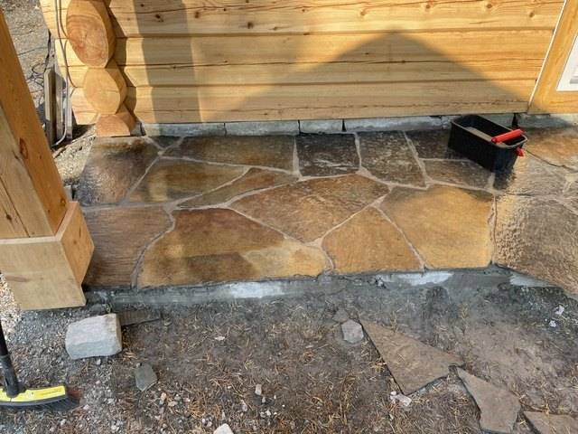
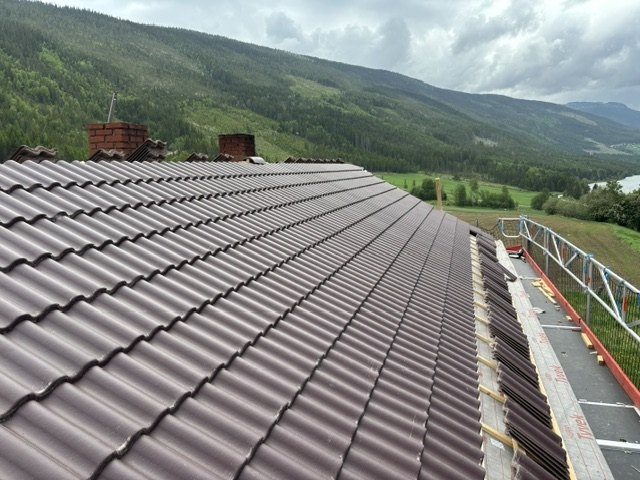
Ta kontakt
Ring Jonathan på 456 12 201, eller send et bilde av jobben på SMS. Befaringen er gratis. Vi holder til i Kvam i Nord-Fron og tar jobber på Vinstra og i Sør-Fron, Ringebu, Sel og Vågå.